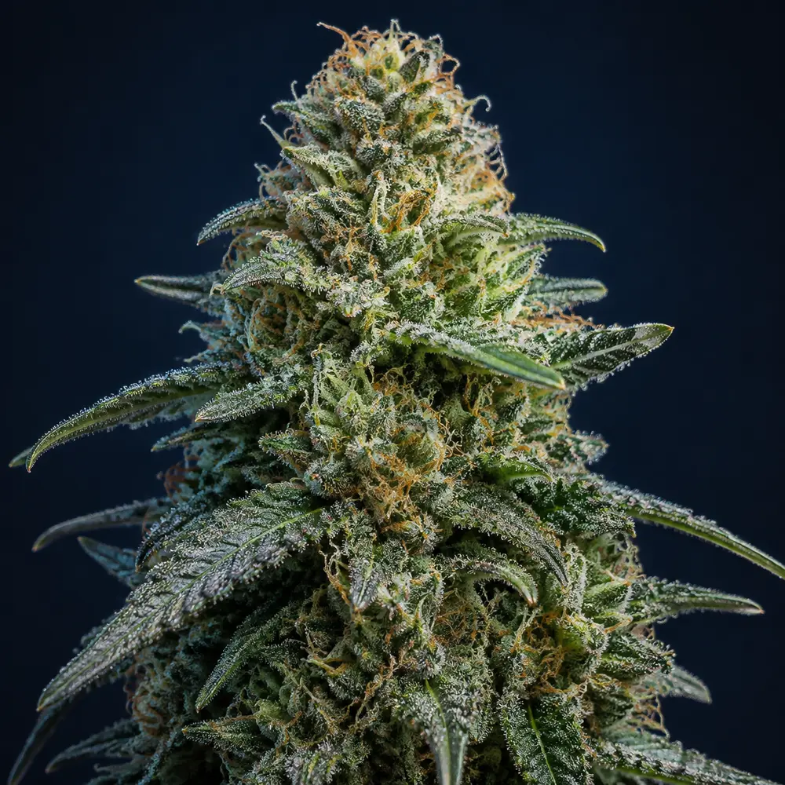

Big Bud Man · First published · Reviewed · https://bigbudman.com/strains/blue-dream/
Jump to a section
Cannabis identity, research-literacy, shopping, and responsible-use education for adults 21+—not medical advice, genetic authentication, laboratory interpretation for a specific product, a legal conclusion, or an effect prediction. Research findings below belong to the samples, methods, and questions in the cited studies. They do not certify a retail product called Blue Dream.
THE USEFUL PART
Keep these in your head.
- Blue Dream is a long-running commercial and cultural name, not a protected formula. The name alone cannot prove lineage, genetics, cannabinoid or terpene composition, potency, effects, safety, freshness, or legality.
- Peer-reviewed studies have included Blue Dream-labeled samples, but they do not establish one universal profile. Their useful lesson is to keep the sample source, method, measured result, and uncertainty attached.
- Flower, pre-rolls, infused products, vape oil, concentrate, and edibles that share the name are different product systems. Do not transfer chemistry, ingredients, hardware, timing, or experience from one format to another.
- At checkout, the strongest record is producer + exact product + form + lot + dates + label + matched report + current recall and seller status—not the famous name.
- A friendly or daytime reputation is not a mildness, no-impairment, or personal-suitability guarantee. Preserve the exact product and context when recording what happened.
The bounded field-note profile

REPRESENTATIVE PHOTOCategory-matched editorial image—not proof of cultivar identity.- COMMON LINEAGE STORY
- Often described as Blueberry × Haze; a retail name does not authenticate that story
- NAME TYPE
- Widely used commercial and cultural strain/cultivar shorthand
- AROMA SHORTHAND
- Berry, floral, herbal, haze, or pine language varies by source and lot
- FORMAT WARNING
- Flower, infused pre-roll, vape, concentrate, and edible are not interchangeable
- RESEARCH BOUNDARY
- Published Blue Dream samples are evidence about those samples—not every product using the name
- DECISION RECORD
- Producer · exact form · lot · dates · units · ingredients · report · condition
What the Blue Dream name can carry
The name can help a reader find historic references, compare producer descriptions, locate a menu category, and preserve how a package identified itself. It cannot carry every downstream fact. Blue Dream has been reproduced, selected, renamed, crossed, reformulated, extracted, flavored, and sold across many markets for years. Even when two sellers are using related plant material, the finished products can differ after production, harvest, processing, formulation, storage, sampling, and testing.
| Claim attached to the name | Evidence actually needed | Why the name is not enough |
|---|---|---|
| Lineage or genetic identity | Breeder or source record, accession or clone chain, and appropriate genetic evidence | A menu description can be copied and the name can cover multiple sources |
| Cannabinoid or terpene profile | Exact sample or lot, plant/product matrix, method, units, dates, and complete report | Chemistry changes across material and cannot be reconstructed from reputation |
| Aroma | The current product, ingredients, condition, and a clearly bounded observation | Cultivation, cure, age, extraction, and added flavoring or terpenes can alter aroma |
| Effect or mildness | No label can guarantee an individual response; preserve product, amount, route, co-use, context, and person | Anecdote and market shorthand are not controlled prediction |
| Safety or legality | Current product-specific evidence and the rule governing the exact place, date, activity, and seller | A cultivar name is neither a safety certificate nor a legal category |
Read Blue Dream research sample by sample
Several peer-reviewed papers are useful because they show how a familiar name behaves under different research questions. They should not be combined into a fictional universal Blue Dream specification.
| Study question | Blue Dream evidence in that study | Boundary to keep visible |
|---|---|---|
| Can commercial samples be grouped by measured terpenoids? | A 2017 study included Blue Dream-labeled material in a measured terpenoid data set and discussed pinene-associated groupings | The result belongs to the sampled material, analytical method, analytes, and clustering approach; it is not a retail profile guarantee |
| Do people describe aroma consistently, and how do named samples relate genetically? | A later study included five Blue Dream samples in an olfactory and genetic analysis and reported both consensus and outlier relationships | A sample count and panel cannot define every future product or predict one person's perception |
| Do popular names reliably identify genetic relationships? | A genetics study discussed variation among Blue Dream samples beyond what a simple clone-only expectation would suggest | The paper does not authenticate the item in a reader's hand or settle every historic lineage claim |
| How diverse is commercial cannabis chemistry at scale? | A large U.S. data analysis found substantial chemical diversity and broad limits in commercial labeling systems | Aggregate retail data provide context; they do not transfer one result to a specific lot without a match |
The disciplined conclusion is modest: published evidence gives readers reasons to ask for better identity and exact-lot records. It does not justify declaring that all Blue Dream is chemically identical, that the name is meaningless, or that one paper can rank a product.
Same name, different product systems
| Format | Evidence to read | Do not inherit from Blue Dream flower |
|---|---|---|
| Plain flower | Producer, lot, dates, cannabinoid basis, moisture/condition, required panels, and package identity | Another producer's potency, aroma, cure, contaminants, or experience |
| Pre-roll | Flower identity, count, net weight, ingredients, paper/filter, infused status, lot, and report | A jar photo, flower freshness assumption, or per-roll amount not printed or calculable |
| Infused pre-roll | Flower plus every concentrate or added ingredient, labeled potency basis, lot chain, and product-specific report | The exposure, burn behavior, or strength of plain flower |
| Vape or concentrate | Extract type, ingredients, hardware, concentration/total units, lot report, storage, and device instructions | Flower chemistry, inhalation experience, or cartridge compatibility |
| Edible or beverage | Cannabinoids per serving and package, serving size/count, ordinary ingredients, allergens, dates, lot, and storage | Flower timing, aroma, serving equivalence, or a dose recommendation |
If a seller uses the name across formats, treat each format as a separate evidence record. The potency-unit translator shows why percent, mg/g, mg/mL, per-serving, and package-total numbers cannot be mixed casually.
Build the package-to-lot record
Photograph the complete unopened package and preserve the original files when documenting a problem. A screenshot of a menu card is not a substitute for the package or complete report.
Use a seven-gate checkout screen
- Verify the seller and producer.
Use the current official route where a regulated market applies. A recognizable name does not validate an unlicensed channel.
- Name the exact format.
Plain flower, infused pre-roll, vape, concentrate, and edible create different ingredient, unit, storage, hardware, and exposure questions.
- Read the complete label.
Capture product identity, net quantity, count, ingredients, warnings, lot, dates, serving language, and cannabinoid units.
- Match the lot report.
Require the same producer, product, form, lot, and plausible date sequence. Check the complete report—not only a potency tile or pass badge.
- Check condition and notices.
Reject an unexplained broken seal, leak, visible growth, foreign material, missing lot, or unreadable label. Check current recalls and regulator notices.
- Compare like with like.
Normalize only compatible formats and units. Use the price and label calculator after the evidence basis matches.
- Keep no purchase available.
Pause when identity, unit, lot, ingredients, seller, condition, or intended use remains unclear. Fame is not a reason to accept missing evidence.
Record experience without turning it into a verdict
If an adult lawfully chooses to use a product, a useful note separates the product record from the observation. Record the exact form, printed units, amount actually used if known, time, food, alcohol or other substances, medicines when relevant to a clinician, setting, sleep, prior exposure, and what was observed in plain language. Do not use the note to prescribe a serving to another person.
- “DAYTIME”Does not grant permission to drive, work at height, supervise a child, or perform a safety-sensitive task.
- “BALANCED”Does not state a cannabinoid ratio or guarantee a middle-intensity experience.
- “FAMILIAR”Does not make a new producer, lot, format, or potency equivalent to an old one.
- “BERRY”Is aroma language, not genetic authentication, safety evidence, or a clinical effect.
Peer-reviewed sources and evidence limits
Sources reviewed November 17, 2026. The studies are used for their reported sample, measurement, and naming questions—not to invent one Blue Dream chemistry, effect, medical benefit, legal status, product rating, price, availability, or lineage certificate.
Big Bud Man standard: know the source, read the batch, protect kids and pets, and never drive impaired.